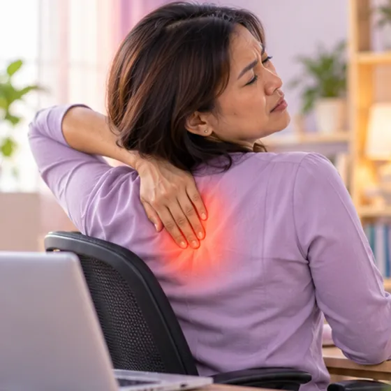
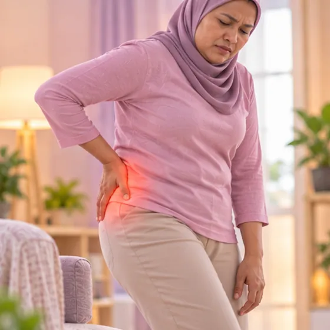
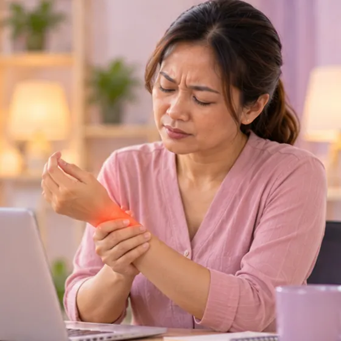
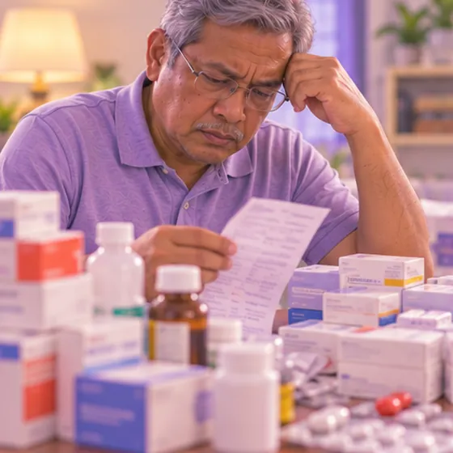

Osteoporosis (tulang rapuh)
Tulang menjadi nipis dan lemah, jadi lebih mudah patah
Apa itu
Dalam osteoporosis, tulang hilang kekuatan dan penuh dengan lubang kecil. Ia boleh patah selepas jatuh atau terhantuk sedikit, dan selalunya tiada sakit sehingga tulang patah.
- Tulang belakang, pinggul, pergelangan tangan
- Warga emas, selepas putus haid
- Selalunya senyap sehingga patah
- Jumpa doktor
- Doktor keluarga, doktor ortopedik, pakar endokrinologi
- Biasa pada
- Wanita selepas putus haid dan warga emas lelaki dan wanita
- Berjangkit
- Tidak
- Perjalanan
- Biasanya jangka panjang; doktor boleh menerangkan cara melindungi tulang anda
Tanda biasa

Sakit pinggangLumbago (sakit pinggang) 
Sengal di antara tulang belikatSakit antara tulang belikat 
Sakit di pinggulSakit pinggul 
Sakit pergelangan tanganSakit pergelangan tangan
Mengapa ia berlaku

Peningkatan usiaPenuaan 
Penggunaan ubat jangka panjangKesan sampingan ubat
Punca lain
- Kekurangan kalsium atau vitamin D, atau kurang cahaya matahari dan senaman
- Merokok, terlalu banyak alkohol, atau badan terlalu kurus
Jumpa doktor dahulu jika
- Jatuh diikuti sakit teruk, atau tidak boleh berdiri atau berjalan: ke hospital
- Anggota badan yang kelihatan bengkok atau cacat: ke hospital
- Sakit belakang baru yang mendadak, walaupun selepas gerakan kecil atau batuk
- Menjadi lebih pendek atau lebih bongkok dari semasa ke semasa
- Kebas atau lemah pada kaki, atau hilang kawalan pundi atau usus: ke hospital segera
Jika mana-mana berkenaan, sila jumpa doktor sebelum sesi.
Halaman ini ialah maklumat am. Sila terus mengambil ubat biasa anda dan terus berjumpa doktor.
Teruskan mengambil ubat biasa anda dan terus berjumpa doktor. Sesi kami ialah sokongan lembut dan tidak menggantikan rawatan perubatan.
Menjaga diri

Jadikan rumah selamat daripada jatuhPencegahan jatuh 
Berhenti merokokBerhenti merokok
Lebih banyak cara menjaga diri
- Makan makanan yang mengandungi kalsium seperti tenusu, tauhu dan sayur hijau
- Dapatkan sedikit cahaya matahari pagi yang selamat, dan tanya doktor tentang vitamin D
- Lakukan senaman menanggung berat seperti berjalan, seperti yang dibenarkan doktor
Beritahu ahli terapi anda
- Tulang lemah
- Kecederaan atau pembedahan belakang baru-baru ini
- Perentak jantung atau implan logam
- Ubat pencair darah
- Kehamilan
- Penyakit buah pinggang atau hati
Ahli terapi anda akan menyemaknya bersama anda sebelum bermula.
Soalan dan jawapan
Apakah Osteoporosis (tulang rapuh)?
Tulang menjadi nipis dan lemah, jadi lebih mudah patah. Dalam osteoporosis, tulang hilang kekuatan dan penuh dengan lubang kecil. Ia boleh patah selepas jatuh atau terhantuk sedikit, dan selalunya tiada sakit sehingga tulang patah.
Apakah tanda biasa Osteoporosis (tulang rapuh)?
Sakit pinggang · Sengal di antara tulang belikat · Sakit di pinggul · Sakit pergelangan tangan
Mengapa Osteoporosis (tulang rapuh) berlaku?
Peningkatan usia · Penggunaan ubat jangka panjang
Bagaimana menjaga diri dengan Osteoporosis (tulang rapuh)?
Jadikan rumah selamat daripada jatuh · Berhenti merokok
Bolehkah sesi AI Body Master membantu Osteoporosis (tulang rapuh)?
Sesi ialah sokongan meridian tanpa jarum yang lembut untuk kesejahteraan anda. Ia tidak merawat atau menyembuhkan Osteoporosis (tulang rapuh) dan tidak menggantikan ubat atau doktor anda. Beritahu ahli terapi anda sebelum sesi bermula.
Keadaan berkaitan
- Kaki rata
- Penyakit tulang rapuh (osteogenesis imperfekta)
- Artritis pascatrauma
- Penyakit Kashin-Beck
- Sendi pinggul berbunyi klik
- Fluorosis tulang
- Tendinopati Achilles
- Tendonitis Achilles
- Koyak bahagian belakang meniskus (lutut)
- Meniskus haus (lutut)
- Kecederaan saraf brakial (saraf bahu dan lengan)
- Patah akibat tulang lemah
Rujukan: General information based on public health sources such as Mayo Clinic, NHS, Cleveland Clinic and NCBI StatPearls.
Halaman dikemas kini: 2026-11-09